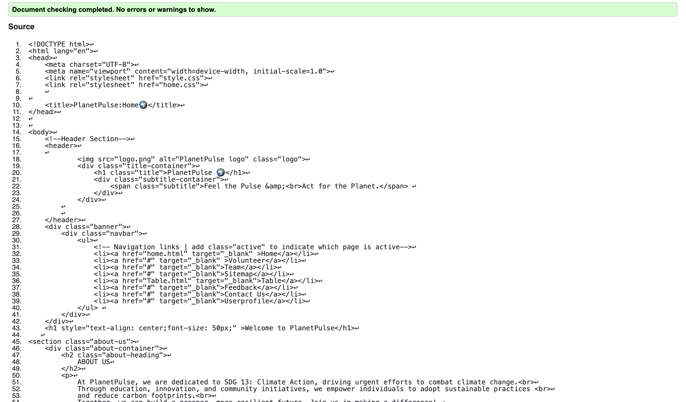
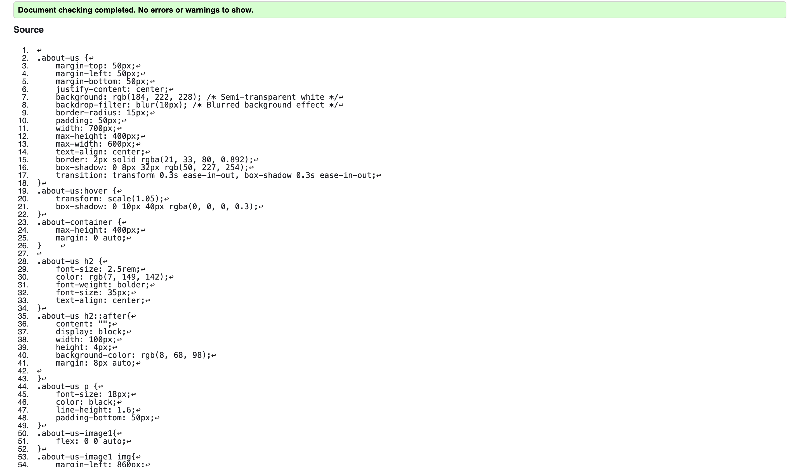
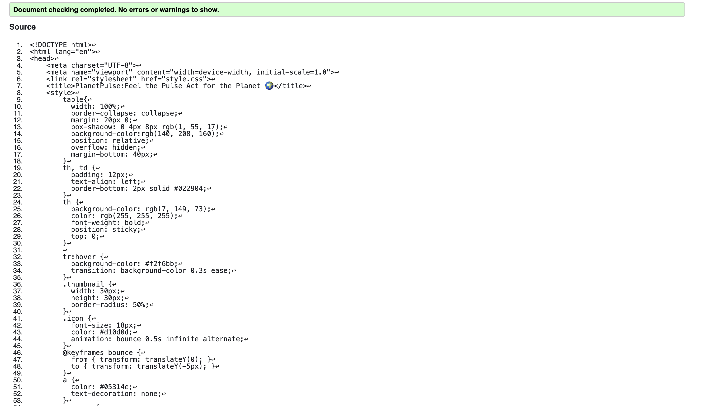
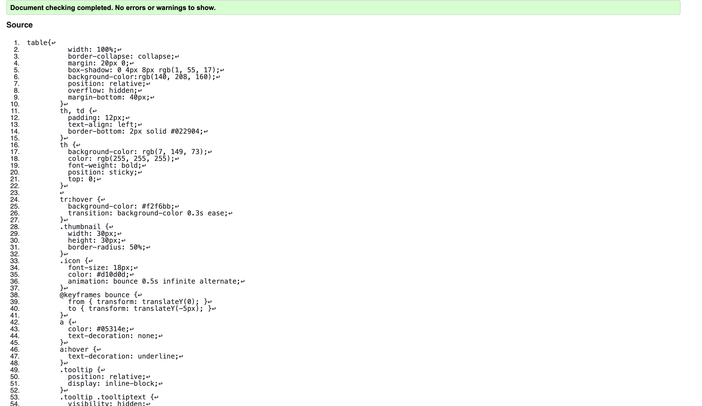
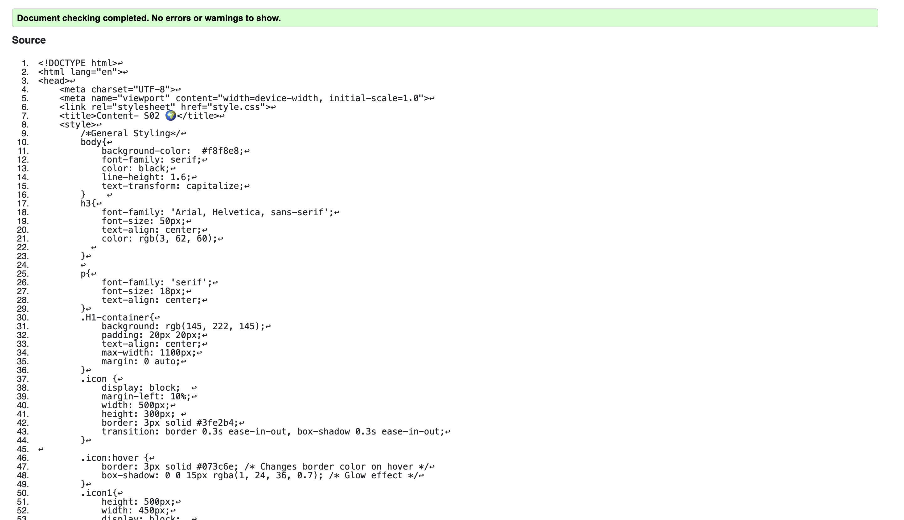
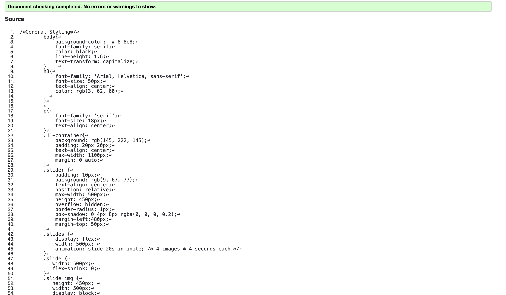

Home Page validation report
After running my web pages through the W3C Validator, I found one HTML error in my Homepage, which was missing a closing tag. Additionally, there were no CSS warnings. I fixed these issues by carefully reviewing the code and ensuring proper syntax.

CSS Validation

Back to Page Editor page
Table validation report
After implementing the Table page, I ran it through the W3C Markup Validation Service to ensure compliance with HTML standards. The validation process highlighted a few issues, such as improper nesting of elements and missing closing tags.To fix those errors I carefully reviewed the structure of the table and ensured that all elements were properly nested and closed.

CSS Validation

Back to Page Editor page
Content Page validation report
After implementing the Content page, I used the W3C Markup Validation Service to ensure the HTML adhered to web standards. The validation process found a few problems, such misuse of block-level elements, unclosed tags, and incorrect nesting of ul and ol elements. These problems were mostly caused by missing closing tags for some components and putting unordered lists straight inside ordered lists.

CSS Validation
